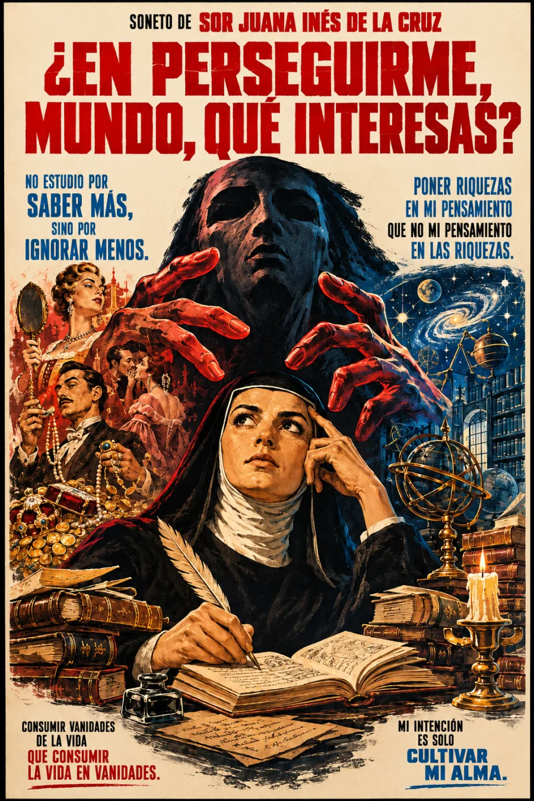

Una defensa del entendimiento
Sor Juana dirige su pregunta a un Mundo personificado: ¿por qué hostigar a quien busca cultivar la inteligencia? La voz poética contrapone la riqueza interior a la acumulación de bienes y la belleza del pensamiento a una hermosura que el tiempo vence.
No renunciar al mundo por ignorarlo, sino decidir qué merece nuestra vida.
El argumento avanza mediante inversiones de palabras: entendimiento y bellezas, entendimiento y riquezas, vida y vanidades intercambian su lugar. Esa precisión verbal transforma el soneto en una defensa de prioridades propias frente a las exigencias externas.
Texto de referencia: Biblioteca Virtual Miguel de Cervantes, Obras escogidas, soneto II. Una lectura completa de catorce versos, sin capítulos añadidos. La esfera y el estudio de la cabecera son una interpretación visual de la vida intelectual, no objetos descritos en el poema.
La lectura
¿En perseguirme, Mundo, qué interesas? · Soneto completo
Reseñas

Bueno